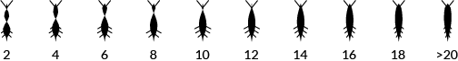

Um ecossistemaAn ecosystem of
político-empresarialcorporate politicians
Portugal 1975-2013
Visualização interactiva das relações de membros de Governos de Portugal com empresas e grupos. Interactive visualization of the relations between members of Portuguese governments and companies
English
Uma empresa
com tamanho proporcional
ao número de políticosA company
with size proportional
to the number of politicians
Um político
a participar nessa empresaOne politician
with a management position at that company
Participações em governosPositions in Governments& outras empresas que partilham
os mesmos políticos& other companies that share
the same politicians
Um ecossistemaAn ecosystem of
político-empresarialcorporate politicians
Portugal 1975-2013
Pedro Cruz está nomeado para o prémio Nação Inovadora (SIC Notícias/Audi). Se gostou desta visualização vote aqui.
Esta é uma visualização interativa das relações de membros de Governos de Portugal com empresas e grupos para o período de 1975 a 2013. O tempo da visualização não representa uma escala cronológica—em vez disso preferiu-se representar todos os políticos e empresas ao mesmo tempo para destacar o trânsito frenético de políticos por entre empresas.
O universo dos dados é abordado como um ecossistema—um conjunto de relações de interdependências que são reguladas por condições físicas, em que cada político tem uma sequência de empresas para visitar, perseguindo-as e saltando entre elas para recomeçar a sequência de cada vez que a completa.
An interactive visualization of the relationships between members of Portuguese governments and companies for the period of 1975 to 2013. Data is approached as an ecosystem, where each set of interdependent relations are regulated by physical conditions—each politician has a sequence of companies to visit, chasing them and jumping between them, in order to restart the sequence each time it is completed.
The visualization time is not set on a strict chronological order, but instead it displays every politician and company at the same time in order to emphasize the frenetic traffic of politicians in-between companies.
As empresas são círculos com área proporcional ao número de políticos que tiveram um cargo nela durante o período 1975-2013. Desta forma os círculos maiores representam empresas por onde passaram mais políticos.
Os políticos são simulados como organismos vivos, tendo uma série de empresas a visitar e circundando cada uma por uma quantidade de tempo proporcional à duração de um cargo específico naquela empresa. A cor de cada político reflete a última afiliação partidária que se conseguiu determinar. Nos casos em que isso não foi possível, são cinzentos.
A anatomia de um político está relacionada com o número de companhias únicas que tem de visitar como mostra a imagem seguinte.
The circles represent companies with an area proporcional to the number of politicians that passed through that company during 1975-2013. That way, bigger circles represent companies with more politicians.
Politicians are simulated as living organisms, having a set of companies to visit, encircling them for an amount of time proportional to the duration of their specific positions at the company. The color of each politician is based on its latest party affiliation, such as socialists, social-democrats and conservatives. In cases where the political affiliation could not be defined, politicians are left gray.
The anatomy of a politician is related the number of unique companies that he has to visit, as shown by the following image.
Para além de visualizar todas as relações deste ecossistema simultaneamente, é também possível explorar universos de tráfego de primeira ordem.
Clicando numa empresa, isola-se o ecossistema dessa empresa, mostrando apenas os políticos que tiveram um cargo nessa empresa e todas as empresas que também tiveram esses políticos orbitando em torno da empresa selecionada.
Clicando num político visualiza-se o seu percurso por entre empresas, assim como se acedem aos cargos políticos e respetivas afiliações partidárias.
In addition to visualize every relation in this ecosystem simultaneously, it is also possible to explore more specific views.
By clicking on a company, one can isolate its ecosystem, displaying only the politicians that had a position at that company and also displaying other companies that had the same politicians orbiting around the selected company.
By clicking on a politician one can visualize his path between companies, as well as get access to his positions in governments and respective political affiliations.
Os dados são quase na totalidade retirados do estudo «Política e Negócios» feito para o documentário «Donos de Portugal» de Jorge Costa. Como se lê no estudo, o grupo de pessoas abordadas representa apenas uma amostra da dimensão real do trânsito entre cargos governativos e órgãos sociais de grandes empresas ou grupos económicos.
A pesquisa em «Política e Negócios» vai até meados de 2010 e incidiu apenas sobre ministros e secretários de Estado, predominantemente de setores estratégicos (finanças, economia e obras públicas). Esta pesquisa foi complementada com uma investigação sobre a continuidade dos cargos até fins de 2013. Em adição a estes foram adicionados políticos contemplados no «Estudo exploratório sobre as ligações políticas das empresas cotadas em Portugal» (em actas da conferência XV Encontro Aeca, Ofir-Esposende, 2012) e mais uma mão cheia de outros que considerámos relevantes mas que tiveram sempre cargos governamentais de destaque (secretário de estado, ministro, primeiro-ministro).
Deve-se destacar que a informação recolhida provém de informação pública sobre a constituição dos órgãos sociais das empresas, de relatórios de contas públicos, de currículos públicos e algumas notícias na imprensa online. Este trabalho resultou na recolha de mais de 130 políticos e mais de 350 empresas que vão sendo adicionados ao sistema assim que confirmamos as pesquisas. Ratificações e sugestões sobre alguma entrada nos dados podem ser feitas para .
O dados estão disponíveis aqui e o agrupamento de empresas aqui ambos JSON UTF-8 e sob a licença Creative Commons Attribution 4.0 International.
The data was collected from a study of politics and businesses done for the documentary “Donos de Portugal” which covers the relations of ministers and secretaries of state of Portuguese governments with companies, roughly from 1975 to 2010. This study was complemented with our own research of their positions in companies until 2013.
In addition, other politicians and companies were added from an “Exploratory study about political connections of stock companies in Portugal”, and another hand full that we deemed relevant but always with high governmental positions (ministers, secretaries of state and prime-ministers).
It should also be noticed that the gathered information was always included from public sources, such as companies' governing bodies available online, companies' public reports, news from the online press and public résumés. This resulted in more than 130 gathered politicians and more than 350 companies that are still being added to the system as we conclude our research. Although this data is only a sample of the real dimension of traffic between companies and governments in Portugal, it is indeed highly illustrative of the subject.
O meu nome é Pedro Miguel Cruz, gosto de dar forma às coisas e esta é a forma que dei a este assunto. Sou estudante de doutoramento na Universidade de Coimbra no CDV-CISUC. A Cátia Costa, também membro do CDV Lab, passou pelo martírio indispensável, com rigor, perseverança e tenacidade, de investigar, escrever e ratificar quase 9000 linhas de dados. Sem o meu orientador, Penousal Machado, este trabalho não teria a sua forma atual, nem tinha sido possível pelo menos não na posse da sanidade mental a que agora me disponho. Um obrigado ao Alexandre Matos e ao João Bicker pelos vetores valiosíssimos.
My name is Pedro Miguel Cruz, I like to shape things, and this is the form that I gave to this subject. A big thank you to Cátia Costa, member of the Computational Design and Visualization Lab at University of Coimbra, that researched, ratified and typed almost 9000 lines of data, with rigor and perseverance. A big shout-out to my supervisor Penousal Machado without whom this work wouldn't be possible as it is. A word of appreciation for the wisdom to Alexandre Matos and João Bicker.
Os principais alicerces desta aplicação são as muito boas bibliotecas minimais sketch.js e Coffee Physics do Justin Windle. Outras se seguem: has.js, devbridge/jQuery-Autocomplete, nanoScroller.js, harthur/color.js, sole/tween.js, Hyphenator.js.
My main inspiration for the implementation of this work and its core components are the delicious sketch.js and Coffee Physics from Justin Windle. Others follow that should have my most respectable acknowledgment, since they make life so much easier: has.js, devbridge/jQuery-Autocomplete, nanoScroller.js, harthur/color.js, sole/tween.js, Hyphenator.js.